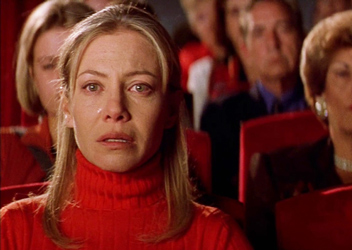
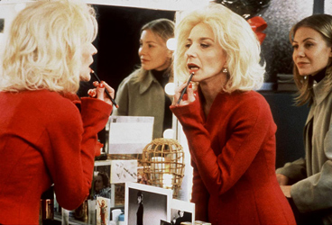
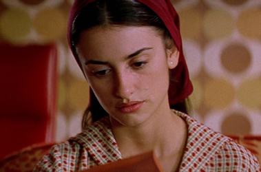
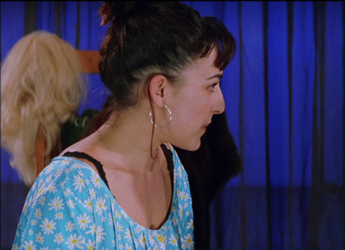
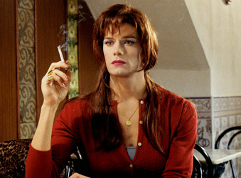
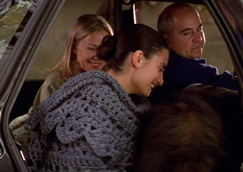
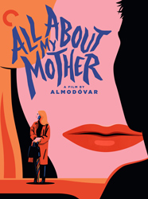
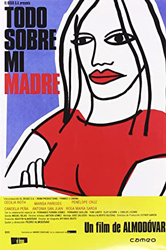
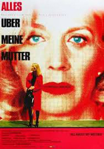
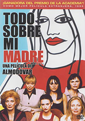

Cecilia Roth - Manuela
Marisa Paredes - Huma Rojo


Penélope Cruz - Rosa
Candela Peña - Nina Cruz


Toni Cantó - Lola
Agrado
Rosa's mother
Rosa's father
Doctor in 'A Streetcar Named Desire'
Doctor 2
Malena
Agustin Almodóvar - Taxi Driver

The film centres on Manuela, an Argentine nurse who oversees donor organ transplants in Ramón y Cajal Hospital in Madrid and single mother to Esteban, a teenager who wants to be a writer.
On his seventeenth birthday, Esteban is hit by a car and killed while chasing after actress Huma Rojo for her autograph following a performance of A Streetcar Named Desire, in which she portrays Blanche DuBois. Manuela has to agree with her colleagues at work that her son's heart be transplanted to a man in A Coruña. After travelling after her son's heart, Manuela quits her job and journeys to Barcelona, where she hopes to find her son's father, Lola, a transgender woman Manuela has kept secret from her son, just as she never told Lola they had a son.
In Barcelona, Manuela reunites with her old friend Agrado, a warm and witty transgender sex worker. She also meets and becomes deeply involved with several new friends: Rosa, a young nun who works in a shelter for sex workers who have experienced violence, but is pregnant by Lola and is HIV positive; Huma Rojo, the actress her son had admired; and the drug-addicted Nina Cruz, Huma's co-star and lover. Her life becomes entwined with theirs as she cares for Rosa during her pregnancy and works for Huma as her personal assistant and even acts in the play as an emergency understudy for Nina during one of her drug abuse crises.
On her way to the hospital, Rosa asks the taxi to stop at a park where she spots her father's dog, Sapic, and then her own father, who suffers from Alzheimer's; he does not recognize Rosa and asks for her age and height, but Sapic recognizes Rosa. Rosa dies giving birth to her son, and Lola and Manuela finally reunite at Rosa's funeral. Lola (whose name used to be Esteban), who is dying from AIDS, talks about how she always wanted a son, and Manuela tells her about her own Esteban and how he died in an accident. Manuela then adopts Esteban, Rosa's child, and stays with him at Rosa's parents' house. The father does not understand who Manuela is, and Rosa's mother says it's the new cook, who is living there with her son. Rosa's father then asks Manuela her age and height.
Manuela introduces Esteban (Rosa's son) to Lola and gives her a picture of their own Esteban. Rosa's mother spots them from the street and then confronts Manuela about letting strangers see the baby. Manuela tells her that Lola is Esteban's father; Rosa's mother is appalled and says: "That is the monster that killed my daughter?!"
Manuela flees back to Madrid with Esteban; she cannot take living at Rosa's house any longer, since the grandmother is afraid that she will contract HIV from the baby. She writes a letter to Huma and Agrado saying that she is leaving and once again is sorry for not saying goodbye, like she did years before. Two years later, Manuela returns with Esteban to an AIDS convention, telling Huma and Agrado, who now run a stage show together, that Esteban had been a miracle by becoming HIV free. She then says she is returning to stay with Esteban's grandparents. When Manuela asks Huma about Nina, Huma becomes melancholic and leaves. Agrado tells Manuela that Nina went back to her town, got married, and had a fat, ugly baby boy. Huma then rejoins the conversation briefly before exiting the dressing room to go perform.




Joseph L. Mankiewicz (1950) - After replacing Nina as Stella in A Streetcar Named Desire, Manuela is compared to Eve Harrington in All About Eve. Manuela and Esteban watch this on TV.
David Lynch (1980) - Agrado complains her bruised face makes her look like The Elephant Man.
Dino Saluzzi
Ismaël Lô